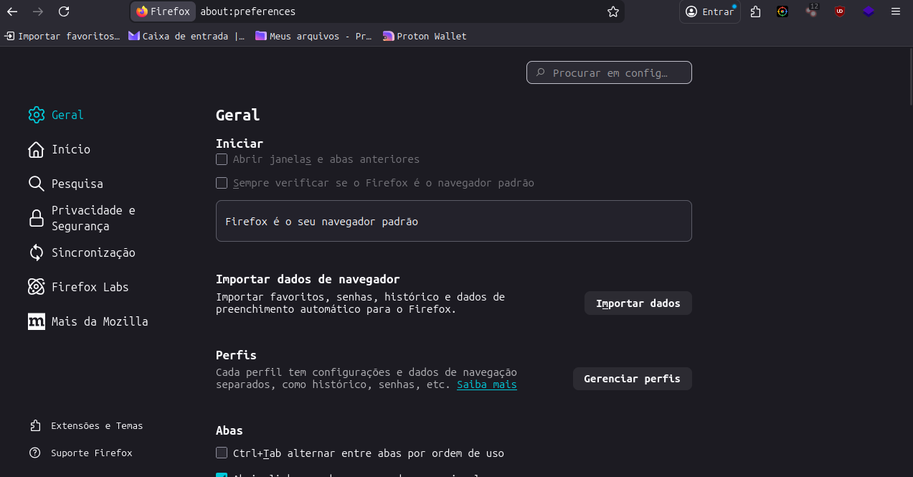
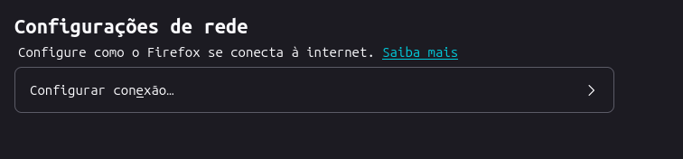
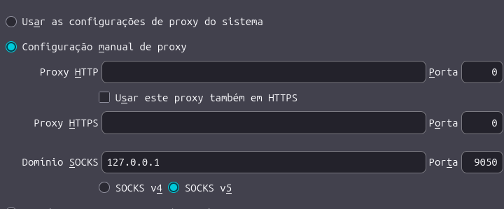

Rede tor nos navegadores
Sabia que é possível usar a rede tor no seu navegador? Pois é! Isso é possível e eu vou te mostrar como fazer isso.

Primeiro passo é abrir o seu navegador, e relaxa não precisa ser só o firefox,
você pode usar qualquer navegador como o chrome, safari, librewolf ou qualquer outro.
 Após isso entre nas configurações do seu navegador (No caso clicando em um simbolo que pode ter
3 pontos ou 3 barras dependendo do seu naveagador, que fica lá em cima perto da área onde você faz pesquisa).
 Agora você vai tentar encontrar isso ou algo parecido como "Configuração de rede".
 Agora quando você clicar pra configurar, nessa parte do proxy manual, selecione o domínio SOCKS
e utilize esse IP: 127.0.0.1, já a porta use a porta 9050 e ative SOCKS5 e claro abaixo também ative a opção "proxy DNS ao usar SOCKS v5" ou
se não tiver escrito isso vai estar escrito algo semelhante e após isso clique em "Ok".
Certo, aprendemos a usar o tor no navegador sem ser o tor browser, mas aqui vai um aviso, ele não garante total anônimato, então... Nem sempre é bom utilizar o tor
no navegador por questões que primeiro: O seu navegador que você utiliza no dia-a-dia não é o tor browser e segundo que também pode limitar alguns sites.